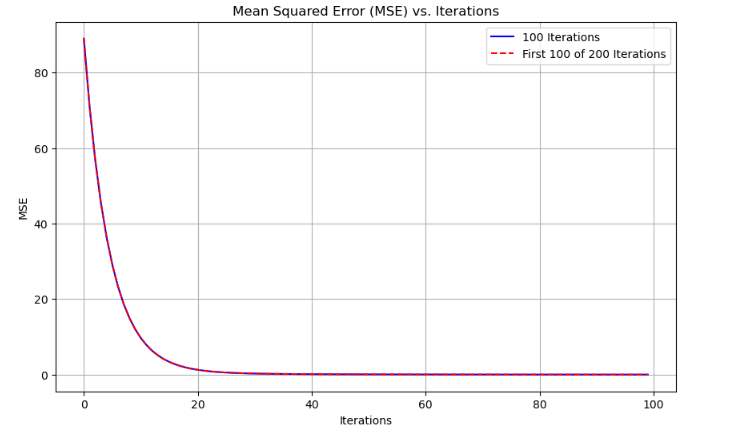
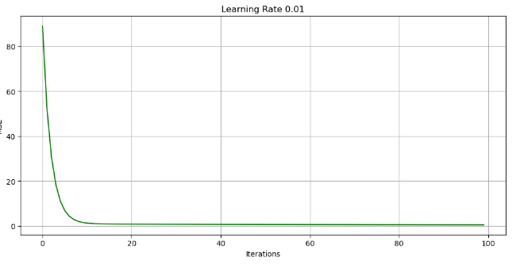
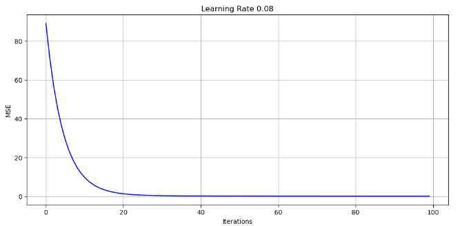
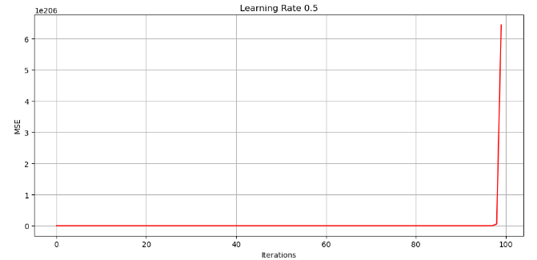

✥ Unit 8: Training an Artificial Neural Network
Outcomes from the Team Exercises and activites
Backpropagation is a crucial algorithm in training artificial neural networks, particularly in deep learning models. Munro, 2011 explains backpropagation of error (henceforth BP) as a method for training feed-forward neural networks see Artificial Neural Networks.
This unit described BP as an iterative procedure that adjusts network weight parameters according to the gradient of an error measure. The procedure is implemented by computing an error value for each output unit, and by backpropagating the error values through the network.
BP aims to minimize the discrepancy between a neural network's predicted output and the actual output using a loss function (Tamanna,2023). The training objective is to adjust the network's weights to minimize this loss. The process begins with forward propagation, where input data is used to produce a prediction. The error is then reverse propagated through the network, leading to the computation of the gradient of the loss function with respect to each weight (Goodfellow,2016).
The subsequent step is weight updating, which uses optimization algorithms like Stochastic Gradient Descent (SGD) to modify weights in the error-reducing direction. The extent of this modification is governed by the learning rate (Ruder,2016). Backpropagation's efficiency is its hallmark, facilitating the concurrent optimization of thousands or even millions of weights, making the training of extensive networks viable. Its adaptability is commendable, finding utility across various neural network architectures, from rudimentary feedforward frameworks to intricate structures like convolutional or recurrent neural networks.
E-Portfolio Activity
Overview
Matthew Mayo's article presents a comprehensive overview of the essential principles underlying neural networks. The focus is primarily on the methods utilized to adjust weights through gradient descent and backpropagation. These concepts lie at the heart of deep learning and are of utmost importance for individuals with an interest in this field. By contrasting a single neuron with a complete neural network, the author effectively demonstrates the complexity of the problem. Additionally, the article introduces the concept of the cost function as a means of measuring error and visually representing the problem. The gradient is then introduced as a valuable tool for guiding the path of steepest descent.
Gradient Descent Variants
This article explains the difference between vanilla gradient descent, stochastic gradient descent (SGD), and mini-batch gradient descent in a knowledgeable and neutral tone. It highlights that while vanilla gradient descent is deterministic, which can be both advantageous and disadvantageous, SGD introduces volatility that might appear unpredictable but can aide in escaping local minima and reaching the global minimum. On the other hand, mini-batch gradient descent offers a middle ground by providing a balance between speed and an improved likelihood of finding the global minimum.
Code Description
Description of the Code:
The function gradient_descent begins by initializing the slope (m) and Y intercept (b) of our model line, to zero. These values represent the parameters that we want to adjust in order to minimize our cost function. Throughout the iteration process the algorithm updates the values of m and b based on the gradient. The gradient indicates the direction of increase for our cost function. By moving in the direction, the algorithm aims to find the point or minima of the function.
- The mean squared error (MSE) used in this code is a widely-used measure for regression problems. It calculates the squared difference between predicted outputs. A smaller MSE indicates predictions from our model.
- The learning rate, a hyperparameter in descent determines how big or small each step during optimization should be. It plays a role in ensuring that the algorithm converges towards a minimum.
- In summary, this code provides a demonstration of key concepts in machine learning. It shows how models learn iteratively from data and make predictions.
Experiments: Gradient descent Cost function
Now, the iteration number and learning_rate is changed to observe how cost decreases.
Case 1:
Iterations is changed from 100 to 200 and learning_rate is kept constant at 0.08.
You may see that: The two curves overlap. This shows that regardless of whether the total run is set to 100 or 200 iterations, the MSE values for the first 100 iterations are nearly identical. This picture makes clear that the gradient descent's behaviour is consistent during the first 100 iterations.
Case 2:
Learning rate is changed from 0.01 to 0.08 and to 0.2 while iterations is kept constant at 0.2.
  From the graph, we can observe the following:
- Learning rate = 0.01 (green curve): The algorithm converges very slowly. This implies that smaller learning rates may require multiple iterations to reach the optimal solution.
- Learning rate = 0.08 (blue curve): The algorithm converges at a decreasing speed, reaching a plateau relatively quickly. This is the ideal learning rate and it seems to strike a good balance between convergence speed and stability.
- Learning rate = 0.5 (red curve): Initially the algorithm converges quickly but then begins to oscillate, indicating that the learning rate may be too large. Such oscillations can cause the gradient descent to diverge instead of converge in certain scenarios.
Reflection & Practical Use:
Gradient Descent in Real-world Scenarios
Gradient descent is a crucial optimization technique used in machine learning models to minimize the difference between predicted and actual values. It involves iterative adjustments to minimize the difference between predicted and actual values, often represented by a cost function like the Mean Squared Error (MSE).
Importance in Real-world Scenarios
This unit and especially the seminar session emphasised about its importance in the real-world scenarios. It plays a pivotal role in several industries for optimization such as predicting product recommendations or stock prices, impacting business outcomes. It is also used in sectors such as manufacturing to optimise production processes by reducing waste or energy usage. It contributes in the optimisation of investment portfolios in the financial sector by balancing rewards against risks. Another one is the healthcare industry where it is used to calibrate medical equipment for optimal performance or to alter therapy settings for maximum efficacy with the least number of negative effects. It also aids in route optimisation in logistics to conserve fuel and minimise delivery times.
Gradient descent concepts may be used to any scenario that requires adjusting variables to reach the best possible outcome. However, the choice of learning rate is crucial, as a small rate can lead to slow convergence and require more computational resources, while an overly large rate can cause the model to oscillate or diverge, making it unreliable. Understanding the nuances of gradient descent is essential for data scientists, as real-life data is messy and can throw off optimization processes. Variants of gradient descent, such as stochastic or mini-batch gradient descent, or advanced optimization algorithms like Adam, can help navigate these challenges.
References:
- Munro, P. et al. (2011) ‘Backpropagation’, Encyclopedia of Machine Learning, pp. 73–73. doi:10.1007/978-0-387-30164-8_51.
- Tamanna (2023) Backpropagation in neural networks: A comprehensive guide, Medium. Accessed: 22 October 2023.
- Goodfellow, I., Bengio, Y., & Courville, A. (2016). Deep Learning. MIT Press.
- Ruder, S. (2016). An overview of gradient descent optimization algorithms. arXiv preprint arXiv:1609.04747.
- Bishop, C. M. (2006). Pattern Recognition and Machine Learning. Springer.
- Boyd, S., & Vandenberghe, L. (2004). Convex Optimization. Cambridge University Press.
- LeCun, Y., Bengio, Y., & Hinton, G. (2015). Deep learning. Nature, 521(7553), 436-444.
- Neural network foundations explained: Updating weights with gradient descent & backpropagation. KDnuggets. Accessed: 22 October 2023.
- Kingma, D. P., & Ba, J. (2014). Adam: A method for stochastic optimization. arXiv preprint arXiv:1412.6980.
- Sutskever, I., Martens, J., Dahl, G., & Hinton, G. (2013). On the importance of initialization and momentum in deep learning. In Proceedings of the 30th International Conference on Machine Learning (pp. 1139-1147).
- Srivastava, N., Hinton, G., Krizhevsky, A., Sutskever, I., & Salakhutdinov, R. (2014). Dropout: a simple way to prevent neural networks from overfitting. The Journal of Machine Learning Research, 15(1), 1929-1958.